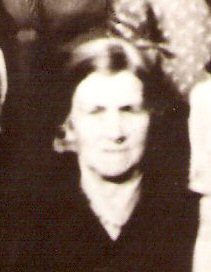

Explore five generations of Noble family history — from Chesterfield in the 17th century to the present day. Click any name or surname to discover more.
1st Generation · c.1655 – c.1750
Founders
Thomas Noble
b. c.1760
Mary Ann Bunting
b. c.1760
Charles Marsh
b. c.1850
Henrietta Marshall
b. c.1855
Tom Drury
1869 – 1917
Lucy Warren
b. c.1871
John Whitaker
b. c.1818

Eliza Peck b. c.18662nd Generation · c.1880 – c.1930
Grandparents
3rd Generation · c.1920 – c.1960
Parents
4th & 5th Generation
Living Family
Kevin Noble
b. c.1955
Ewan Noble
b. c.1985
Kirsty Noble
b. c.1990
All Family Surnames
NobleEast Midlands · Chesterfield
DruryLincolnshire · Norman origin
FowlerSomerset · Dorset
MarshYorkshire · Sheffield
WarrenLeicestershire & Ireland
WardLeicestershire
WoodLincolnshire
MarshallDerbyshire
WainwrightWorcestershire
WhitakerMansfield Woodhouse
WarrySomerset · Chard
FloydStaffordshire · Welsh origin
LloydWorcestershire
BuntingLincolnshire · Mansfield
KeetleyNottingham
PeckSutton in Ashfield
OldMidlands
Laura's Bohemian Ancestry
A separate branch tracing family roots through Central Europe — Austria, Bohemia and the German-speaking world.
Explore the Bohemian ancestry →